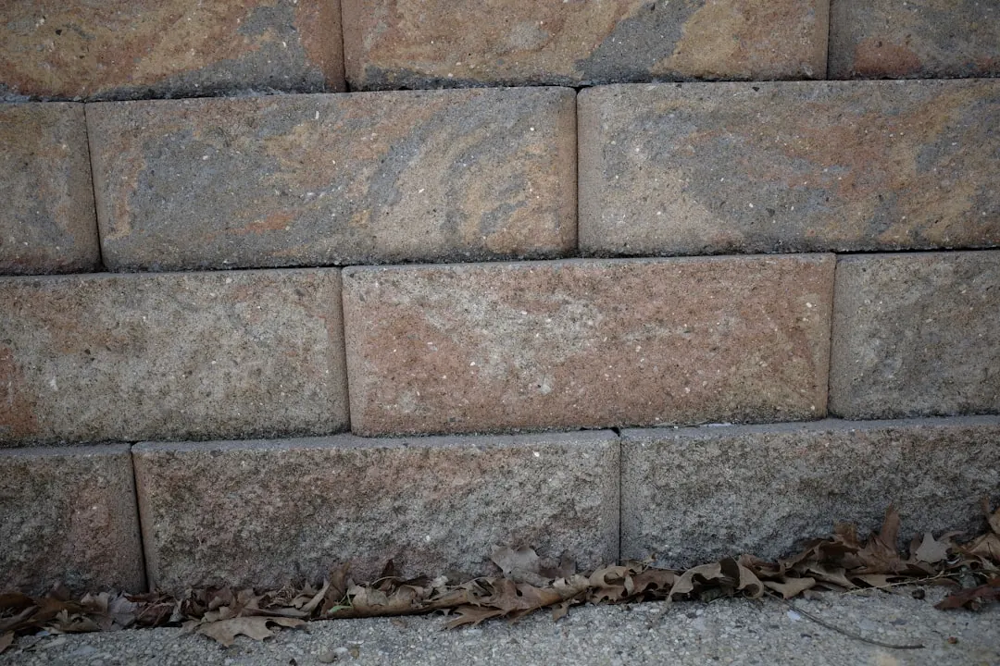

Use a retaining wall directory when you need to compare service type, location fit and project evidence before asking for quotes. The source page lists 8 provider types, shows coverage links for 6 Australian states and territories, and says enquiries are free to submit with no obligation to proceed. A useful request sets out wall size, site conditions, postcode, timing and whether the job is new work, repair or an engineered commercial wall.
For Australians comparing retaining wall contractors, the useful starting point is a clear description of wall type, site conditions and the evidence needed before making contact.
Retaining Wall Contractors Explained
Retaining Wall Contractors Australia asks for wall size, site conditions, postcode and timing. That order is useful because it separates the actual job from the broad trade label. A small repair, a timber replacement, a concrete sleeper wall and an engineered commercial project can all involve retaining work, but they need different information before quoting.
Before contacting providers, write down where the wall sits, what it is meant to hold back, whether access is tight, and whether other work depends on it. The published page does not give design rules, approval thresholds or fixed prices, so treat early contact as a scoping step. Ask what measurements, photos, inspection details or professional documents are needed before the provider can give reliable advice.
- Approximate length and height, or clear photos if measurements are not available.
- Existing material when the job is a repair or replacement.
- Access notes, including slope, narrow entries, nearby structures and delivery space.
- Preferred timing, especially if another building or landscaping task depends on the wall.
Choose A Category By Decision Need
The listed categories are concrete sleeper, timber, block and masonry, stone and boulder, gabion, repairs, engineered and commercial work, plus general contractor listings. Use them as a filter rather than a final material decision. The closer the category is to the actual problem, the better the first conversation is likely to be.
Start with repairs when an existing wall is cracked, leaning, damaged or no longer doing its job. Start with a material category when the desired finish or replacement type is already clear. Use engineered and commercial listings when the wall appears to need design input, documentation or broader site coordination. If the project is still undefined, begin with general listings and ask which wall types suit the site and why.
For a city specific comparison path, the companion guide on retaining wall contractors in Brisbane shows the same sorting problem at local level: category fit first, then provider evidence, then quote detail.
Read Listings As Evidence, Not Proof
The published page says users can read reviews, view photos, compare services and pricing, then contact businesses directly or request a quote through a form. Those signals help narrow a shortlist, but they do not prove that a provider suits a different site. Photos show completed work. Reviews show customer feedback. Service labels show declared focus. The quote still needs site specific checking.
Look for alignment between the listing and the job. A repair enquiry should favour providers that show repair work, not only new construction. A boulder wall enquiry should start with stone and boulder evidence. A documented project should prompt questions about design inputs, project coordination and what information must be supplied before work can be priced.
Pricing needs the same discipline. The page allows comparison of services and pricing, but it does not publish a fixed price schedule. Ask what is included, what remains provisional, whether a site visit is required, and what could change the price after inspection.
Who This Applies To
This guide is for property owners, builders, strata contacts and commercial site managers who need a practical way to shortlist Australian retaining wall providers. It is most useful when the project has moved beyond browsing photos and into scoping, comparison and direct contact.
Homeowners can use it to organise a garden wall, boundary wall, replacement wall or repair enquiry before speaking with a contractor. Builders and project managers can use the same structure when a larger site requires a trade that matches the material, access and documentation needs. Strata or body corporate contacts can prepare clearer notes for a committee by recording photos, location, timing pressure and the reason the wall needs attention.
It is not a substitute for engineering or approval advice. If those issues may affect the project, ask prospective providers whether they coordinate with engineers or whether separate professional advice should be obtained before requesting a build price.
Questions Before You Choose
Use the same questions with each provider so the comparison is fair. Ask what type of wall work they normally undertake, whether they have completed similar jobs, and what information they need before quoting. Send wide photos for context as well as close photos of the wall, ends, joins and access points.
For repairs, ask whether the provider can assess why the existing wall needs attention before recommending replacement. For new walls, ask which choices affect price, scheduling and finish. For engineered or commercial work, ask who prepares design information, who coordinates documents, and what the contractor needs before site work can begin.
Keep the quote request specific. Ask for the appropriate wall for the site, a clear list of inclusions, and any assumptions that could alter the price. ASIC Moneysmart's renovation guidance is relevant here because renovation spending, quotes and contracts should be visible before work starts.
- Describe the wall. Record approximate size, location, access and whether the work is new construction, replacement or repair.
- Choose the closest category. Use the listed service categories to avoid sending a repair or material specific job to the wrong provider type.
- Compare evidence. Review photos, service descriptions and reviews, then ask for examples that match the current site.
- Confirm quote inputs. Ask what measurements, site visits, design documents or owner decisions are needed before pricing is reliable.
| Situation | Start with | Ask before quoting |
|---|---|---|
| New residential wall | Material and location category | What site measurements, photos and access details are needed? |
| Wall repair | Repair listings | Can the likely cause be assessed before replacement is suggested? |
| Larger or documented project | Engineered and commercial listings | Who handles engineering, documents and coordination? |
| Uncertain material choice | General contractor listings | Which wall types suit the site and why? |
Common questions
Is it free to send an enquiry? The source page says enquiry submission is free and there is no obligation to proceed. It also says submitted details may be shared with suitable professionals so they can contact the requester.
Which wall types can be compared? The listed categories include concrete sleeper, timber, block and masonry, stone and boulder, gabion, repairs, engineered and commercial work, plus general contractor listings.
Should I choose by location or material first? Use both. Location helps test service coverage, while material and job type help avoid comparing providers that focus on different wall work.
Does the source page give fixed retaining wall prices? No fixed price schedule is provided in the supplied text. It says users can compare services and pricing, so price should be checked directly with providers quoting the specific site.
This guide covers how to compare Australian wall providers by job type, site information, evidence and quote questions.